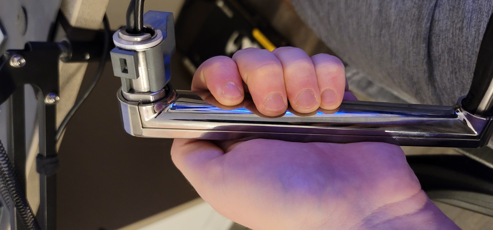

Every warrior needs a weapon and every developer needs an overpriced laptop to run cli applications on. My weapon of choice is the Microsoft surface line of tablets. Ever since seeing a friend's surface 2 all the way back in 2013 I was hooked on the two-in-one form-factor. I've always been a fan of the idea of handwritten notes with the benefits of digital ones, so the kinds of workflows that a laptop/tablet hybrid could facilitate fascinated me. Many years later I found myself with a summer-internship's worth of disposable income to buy a surface pro 7 with. After going through most of college with a budget laptop I didn't really love to use, this was fantastic. I was going to crack out that bad-boy in a lecture hall and leaving all the pencil-and-paper cavemen in the dust. And though a niche world event that happened in 2020 made it so I had no lecture halls to go to, integrating the surface into my remote learning workflow was still very rewarding.
Soon after graduating college, my surface pro 7 became my "developer" workstation (separate from my gaming PC for the sake of boundaries and freedom to pick my work environment). But when I was developing at home, the portable laptop dock I used was clunky. Enter the Kensington SD7000 Surface Pro Docking Station

This was fantastic. It had all of the ports I needed and its main selling point was being able to transform from a floating tablet to a drafting table for handwriting/drawing

At the time, this dock ran new for about \$400. Fortunately I found a local business liquidating some assets... which happened to include one of these guys (nearly unused) for \$100. After flooring it to the office complex where they were selling from and plugging it in, I had a pretty novel (but functional) desk setup.

(funny note: I managed to only have one image of this desk setup in my phone... and it's one of the few times I had the dock unplugged from the tablet. Incredible.)
After a few years of service, my surface pro 7 was showing its age. Both because of the incredible rate that Microsoft can add bloat to windows over such a short time-span and because it was one of the lower spec tablets of its generation (It was only a summer internship salary, I couldn't shell out too much). I decided to upgrade to the surface pro 9 near the end of 2023. Unfortunately the gods above (Random device designers at Microsoft) decided it was time to move the surface connect port about 3 inches higher. This proprietary connector was how the Kensington dock hooked up and unfortunately it was designed only to work if that port was in the specific place that it was before this move. This rendered the dock completely useless. The tablet could still slide in and the pinout of the connector was the same. But the mechanism on the side of the dock which once engaged the connector now hopelessly rammed it into the side of the tablet. (see the little tumor on the right of the tablet in the above images).
This was upsetting, a bit because I liked that form-factor but also because I didn't want a perfectly usable laptop dock to go to waste. I tried selling it for a year or so with no luck, but finally decided that i'd try to make it work for me again.
So my initial thought was to just rip apart the housing of the tablet holder. My hope was that the designers left any slack in whatever cable was connecting the tablet to the main board of the dock. Ideally i'd just be able to pull it up, plug it in manually whenever I want to dock and be on my way. Maybe i'd even design and 3d print a new chassis for it to make it slightly cleaner to look at.
In and out, 20 minute adventure
My first goal was to verify that this would work at all. A quick google search showed that the surface pro dock was still compatible... but I wanted to test to make sure. getting that connector assembly out should be easy, right? Immediately, no. In fact, there were only a few screws on the back panel of the tablet holder that I could get access to. After way too much finagling I managed to get off the panel and saw...

An extremely chunky metal slider. This thing alone was easily a few pounds. I was able to wiggle it out. Sure enough:

If you ignore my messy desk, everything looks great! Very good news.
I then tore it open and was met with a sight I wasn't expecting

When I came into this I thought I would see a raw PCB with contacts for the connector. I mean, why bother with a housing if you're not going to see it and it seemingly won't protect anything. But instead, we have a full fledged surface connector in here - chassis and all. Just like the ones you see on official Microsoft docks.

This is fantastic! I was expecting to have to heatshrink or 3d print a new housing for the connector but now I don't.
Now that I have it out of the mechanism, I needed to look for some slack. But unfortunately the cable was pulled pretty taught. It slithered into one of the arms that held up the tablet mount and disappeared into it. So I figured if there was any slack I'd probably be able to find it in the base of the device. After (very) many more screws I tore into it only to find that the cable was taught. down there too. My first thought was to maybe route it outside the arm it was threaded through to get the extra length I needed. But that's when I noticed that it was encased in solid metal at the two ends of the arm. There was no way I was getting that connector (or the one which attached it to the main board) through.

(as a fun aside, note that the Kensington lock here is just a piece of metal embedded in the side of the plastic casing. I really would have thought there would be something more secure on the device side)
I saw the seam on the side of the arm and figured there was some way to take it apart... but no luck.

I then found that the side of the arm was actually just a sticker . I tore it off and sure enough there were screws under.
At this point, I had decimated the dock quite a bit. At this point, I figured my initial goal of putting it back together and using it as originally intended was more trouble that it was worth. So at this point I fully pulled it apart. Now the base of it sits on my desk.

I'm always happy to keep something out of a landfill. So this was a good exercise.